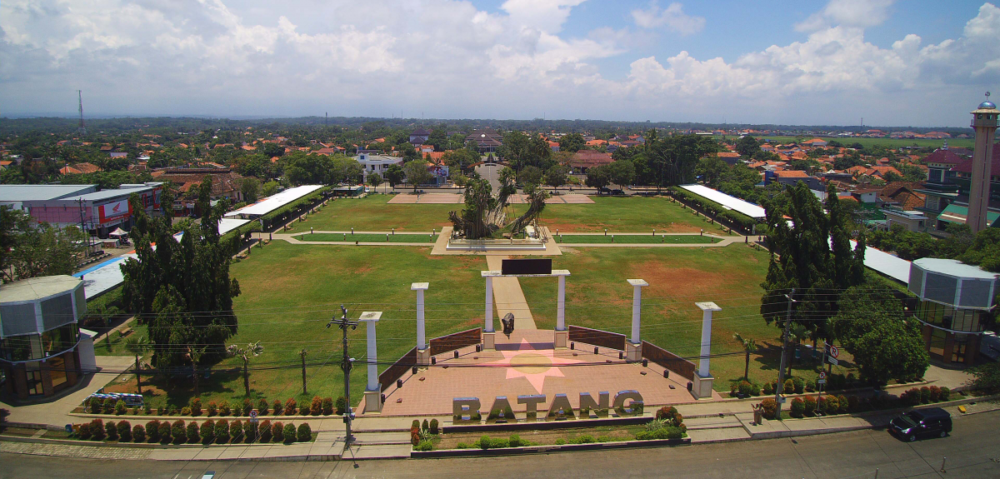

Sejarah Kabupaten Batang

Kabupaten Batang, yang terletak di pesisir utara Jawa Tengah,
memiliki sejarah panjang yang dimulai sejak masa Kerajaan Mataram
Islam. Nama "Batang" berasal dari legenda Ki Ageng Bahurekso,
seorang tokoh yang berhasil mengangkat batang kayu besar yang
menghalangi aliran air di daerah tersebut, sebuah peristiwa yang
kemudian menjadi asal-usul nama daerah ini . Pada masa lalu, Batang
dikenal sebagai kota pelabuhan penting yang sejajar dengan Pemalang
dan Demak, serta telah dikenal sejak zaman Sriwijaya dan Majapahit .
Pemerintahan Kabupaten Batang mengalami dua periode, dimulai dari
kebangkitan Mataram Islam hingga masa penjajahan Eropa, dengan tokoh
penting seperti Kanjeng Adipati Pangeran Mandurorejo yang dianggap
sebagai cikal bakal pemerintahan kabupaten ini .
Layanan Publik
Lembaga Kabupaten Batang
Telepon Penting
Layanan Kesehatan dan Darurat Medis
PSC 119 Si Slamet
(0285) 119
RSUD Batang
(0285) 4493035
RSUD Limpung
(0285) 4468362
PMI Batang
(0285) 391331
RS QIM
(0285) 4495222
Layanan Panggilan Darurat
112
Layanan Keamanan dan Utilitas
Polres Batang
110
Kodim Batang
(0285) 391035
Pemadam Kebakaran
(0285) 392004 / 392914
PDAM Batang
(0285) 391382
PLN Batang
(0285) 391032